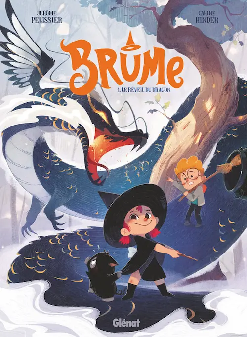
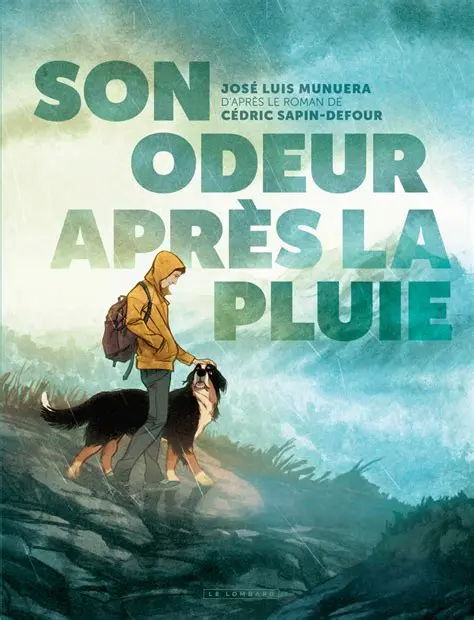
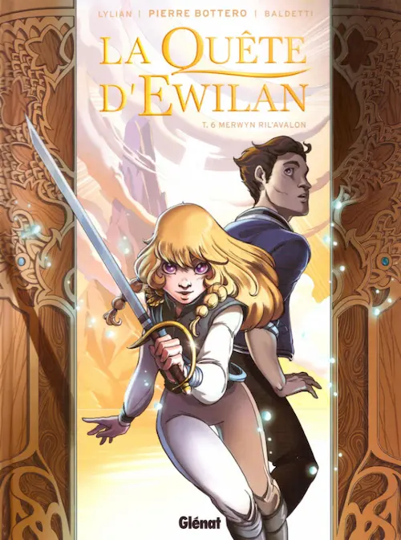
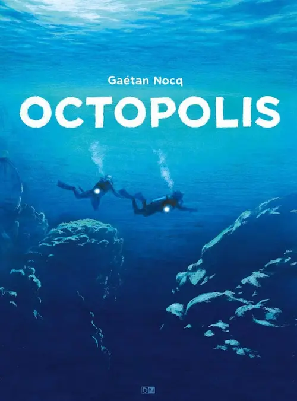
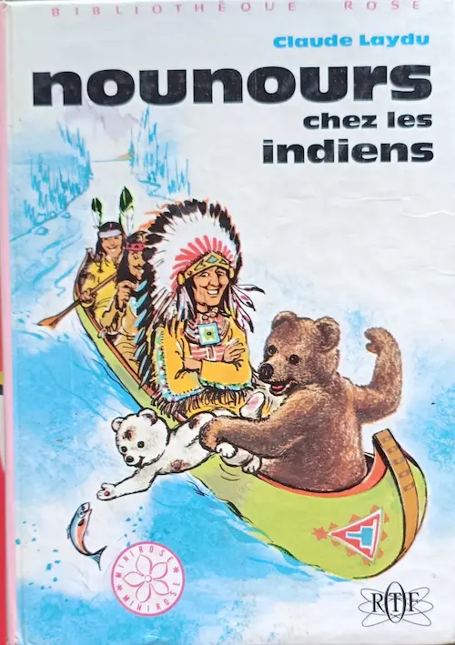

Bandes dessinées et roman jeunesse
Il est temps de faire un point sur mes dernières lectures. Je n’ai pas trop trouvé le temps de lire, dernièrement. Le format BD était plus facile à appréhender. Et d’ailleurs, j’ai découvert une sacrée pépite 🤩, présentée tout de suite.
💖 Brume de Jérôme Pélissier et Carine Hinder
Résumé

Recueillie par un père aimant alors qu’elle était toute petite, Brume est devenue une enfant téméraire et courageuse. Elle adore la légende de la sorcière Naïa et se balade avec une cape, un chapeau noir et une baguette.
Avec son ami Hugo et son cochon Hubert, elle part dans la forêt pour protéger le village d’un dragon. Elle espère ainsi montrer à tous qu’elle est la nouvelle sorcière officielle.
Mon avis
Cette bande dessinée est exceptionnelle. Le dessin est doux, mignon, fluide. L’histoire est intrigante et stimulante. Les personnages sont hilarants, attendrissants. L’ambiance et les décors nous plongent dans une époque médiévale et rurale rafraîchissante. Bref, tous les ingrédients pour une superbe potion sont réunis. Et ça fonctionne parfaitement !
Ce que j’adore le petit cochon Hubert 🥰. L’histoire de Brume est intéressante, et celle du cochon attise ma curiosité.
Je me suis arrêtée à la fin du tome 3 qui clôture un arc narratif. J’attends qu’il y ait davantage de tomes pour continuer. Énorme coup de cœur ♡.
💖 Son odeur après la pluie de José Luis Munuera
Résumé

Adaptation en images, par José Luis Munuera, du roman éponyme de Cédric Sapin-Defour qui nous raconte son histoire avec Ubac, le bouvier bernois qu’il adopte et aime tendrement.
Mon avis
Cette œuvre est sublime et je suis ravie d’avoir pu découvrir l’histoire de Cédric Sapin-Defour et d’Ubac en images, sous le crayon empathique et doux de José Luis Munuera. L’immersion est totale, le partage des émotions aussi 😭. Les dessins, magnifiques, nous emportent au cœur des vallées et des montagnes, en compagnie de ces êtres complices auxquels on s’attache.
Encore un coup de cœur avec cette BD à redécouvrir à volonté, mais en prévoyant la boîte de mouchoirs.
La quête d’Ewilan de Lylian et Laurence Baldetti
Résumé
Adaptation graphique des romans de Pierre Bottero que j’avais beaucoup aimés.

Ewilan découvre qu’elle vient en réalité d’un autre monde dans lequel elle possède un don capable d’aider à mettre fin à la guerre. Avec son ami Salim, elle s’embarque dans une aventure dangereuse qui va lui permettre de découvrir ce qui est arrivé à ses véritables parents.
Mon avis
J’ai lu les romans de Pierre Bottero il y a bien longtemps et, dans mon souvenir, j’avais adoré. Aussi, je ne pouvais pas passer à côté d’une redécouverte de l’œuvre sous cette forme.
Pourtant, j’ai été un peu déçue 😥. L’histoire est là, les personnages sont les mêmes, mais la mise en forme est un peu lourde et indigeste. Je m’explique : le style graphique est un peu dur, les dessins ont des traits rectilignes, raides. Il n’y a pas de douceur ou de rondeur dans ces dessins. On ressent la brutalité des scènes au travers même de leur tracé. Ce n’est sans doute pas un hasard, et c’est peut-être même un choix judicieux, mais il ne m’a pas beaucoup plu. Et parfois, les énormes bulles de passages narratifs sont rébarbatifs.
J’ai quand-même lu tous le tomes, et j’ai aimé aborder cette histoire d’une nouvelle façon. Pour autant, ce n’est pas un coup de cœur.
Octopolis de Gaétan Nocq
Résumé

Mona retourne à Paris suite à la disparition de son père. Elle découvre qu’il étudiait les fonds marins aux abords d’un atoll du pacifique où elle se rend pour suivre ses traces.
Mon avis
Les dessins sont époustouflants. Chaque vignette est une œuvre d’art à part entière. Le bleu profond de l’océan, les animaux et les plantes dans leur milieu, les paysages côtiers, les nageurs… Tout est magnifique 🐙.
On en apprend beaucoup sur les poulpes, entre autres, et sur la présence de minerais dans les abysses. Il semble d’ailleurs que l’auteur veut nous sensibiliser un peu à l’impact de la pêche et des activités minières sur les fonds marins. C’est plutôt chouette.
En revanche, l’histoire est bancale et assez ennuyeuse. Les dialogues sont parfois un peu tordus, les personnages plutôt plats. Et le dénouement semble bâclé. Dommage.
Nounours chez les indiens de Claude Laydu
Résumé

Nounours reçoit un message alarmant d’un cousine d’Amérique. Il semble que les ours soient en danger. Ni une, ni deux, Nounours et Oscar montent sur le nuage magique pour rejoindre la cousine au plus vite. Malheureusement, elle a disparu ! Il ne reste plus à Nounours qu’à se lier avec les indiens pour suivre la trace des chasseurs.
Mon avis
Je ne m’attendais pas du tout à ça. Nounours est en fait l’ourson qui aide le Marchand de Sable dans Bonne nuit les petits, avec Nicolas et Pimprenelle 🐻. C’est amusant. Il a donc la possibilité de voler sur un nuage et de jeter du sable magique.
L’histoire était plutôt bien menée et il y avait de l’humour et de la tendresse. C’est aussi un livre assez ancien bourré de préjugés raciaux. Néanmoins, dénoncer la chasse des ours est toujours apprécié. C’était chouette de découvrir cette histoire pour enfants.
Voilà pour mes dernières lectures. Je devrais essayer de faire mon bilan plus souvent, ou de prendre des notes au fur et à mesure, car je ne me souvenais plus trop de certains points.
J’ai atteint mon quota de livres pour l’année, mais j’aimerais quand-même en lire davantage. J’espère juste trouver le temps de me poser tranquillement pour cela. La prochaine étape est de faire une lecture audio.